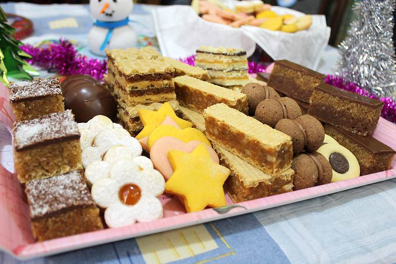

Sigurno svi u svojim kuvarima imamo barem jedan recept koji smo izmislili ili prilagodili svojim potrebama čime
smo stvorili potpuno novu kuhinjsku priču. Podelite je sa ostalim ljubiteljima kuvanja i pronađite nove recepte
kojima ćete bogatiti svoje kuvarske priručnike!

Slatko
Bilo da se radi o bakinim kolačima ili rođendanskim tortama, slatki ukus
dopadljiv je svima!